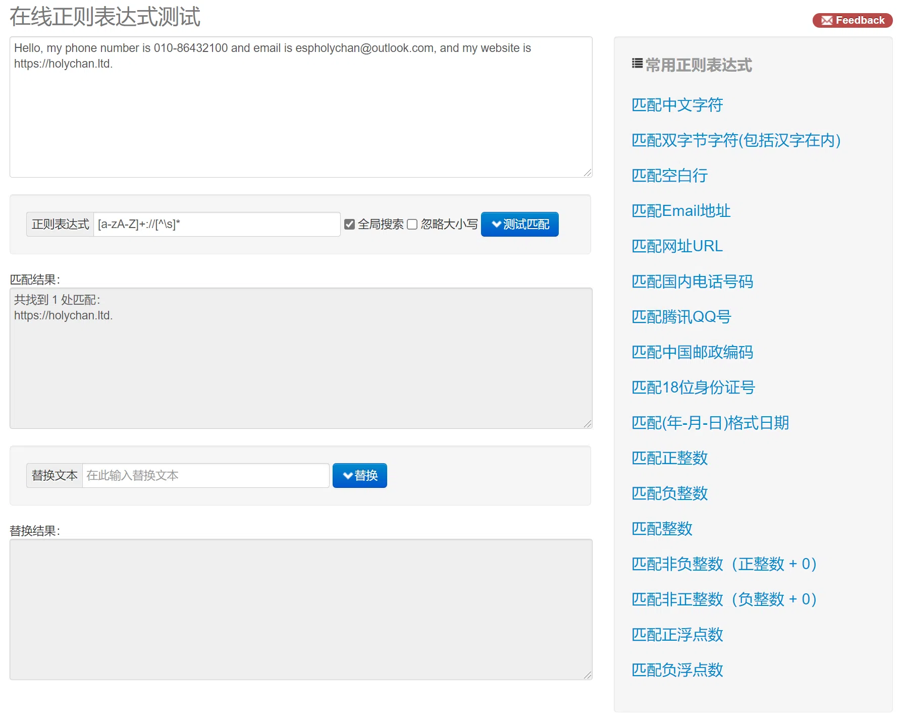

正则表达式
本文最后更新于：2021年6月15日 晚上
正则表达式
正则表达式是处理字符串的强大工具，它有自己特定的语法结构。能实现字符串的检索、替换、匹配验证，对于爬虫来说，从HTML里提取想要的信息就非常方便。
实例引入
下面用几个实例来看一下正则表达式的用法。
打开开源中国提供的正则表达式测试工具http://tool.oschina.net/regex/，输入待匹配的文本，然后选择常用的正则表达式，就可以得出相应的匹配结果了。
例如，输入下面这段待匹配的文本：
1 | |
这段字符串中包含了一个电话号码和一个电子邮件，接下来就尝试用正则表达式提取出来，如图所示。

在网页右侧选择“匹配 Email地址”，就可以看到下方出现了文本中的E-mail。如果选择“匹配网址URL”，就可以看到下方出现了文本中的URL。
这里使用了正则表达式的匹配功能，也就是用一定规则将特定的文本提取出来。
比方说，电子邮件是有其特定的组成格式的：一段字符串 + @ 符号 + 某个域名。而URL的组成格式则是协议类型``+``冒号``+``双斜线``+``域名和路径。
可以用下面的正则表达式匹配URL：
1 | |
用这个正则表达式去匹配一个字符串，如果这个字符串中包含类似URL的文本，那就会被提取出来。
下表中列出了常用的匹配规则：
| 模式 | 描述 |
|---|---|
| \w | 匹配字母、数字及下划线 |
| \W | 匹配不是字母、数字及下划线的字符 |
| \s | 匹配任意空白字符，等价于 [\t\n\r\f] |
| \S | 匹配任意非空字符 |
| \d | 匹配任意数字，等价于 [0~9] |
| \D | 匹配任意非数字的字符 |
| \A | 匹配字符串开头 |
| \Z | 匹配字符串结尾，如果存在换行，只匹配到换行前的结束字符串 |
| \z | 匹配字符串结尾，如果存在换行，同时还会匹配换行符 |
| \G | 匹配最后匹配完成的位置 |
| \n | 匹配一个换行符 |
| \t | 匹配一个制表符 |
| ^ | 匹配一行字符串的开头 |
| $ | 匹配一行字符串的结尾 |
| . | 匹配任意字符，除了换行符，当 re.DOTALL 标记被指定时，则可以匹配包括换行符的任意字符 |
| […] | 用来表示一组字符，单独列出，比如 [amk] 匹配 a、m 或 k |
| [^…] | 不在 [] 中的字符，比如 匹配除了 a、b、c 之外的字符 |
| * | 匹配 0 个或多个表达式 |
| + | 匹配 1 个或多个表达式 |
| ? | 匹配 0 个或 1 个前面的正则表达式定义的片段，非贪婪方式 |
| {n} | 精确匹配 n 个前面的表达式 |
| {n, m} | 匹配 n 到 m 次由前面正则表达式定义的片段，贪婪方式 |
| a|b | 匹配 a 或 b |
| () | 匹配括号内的表达式，也表示一个组 |
Python的re库提供了整个正则表达式的实现，利用这个库，可以在Python中使用正则表达式。
match
首先介绍一个常用的匹配方法——match，向它传入要匹配的字符串，以及正则表达式，就可以检测这个正则表达式是否匹配字符串。match方法会尝试从字符串的起始位置匹配正则表达式，如果匹配，就返回匹配成功的结果；如果不匹配，就返回None。
1 | |
运行结果如下：
1 | |
这里首先声明了一个字符串，其中包含英文字母、空白字符、数字等。接下来，我们写一个正则表达式：
1 | |
用它来匹配这个长字符串。开头的^·匹配字符串的开头，也就是以Hello开头；\s匹配空白字符，用来匹配目标字符串的空格；\d匹配数字，3个\d匹配123；再写1个\s匹配空格；后面的4567，依然能用4个\d来匹配，但是这么写比较烦琐，所以后面可以跟{4}代表匹配前面的规则4次，也就是匹配4个数字；后面再紧接1个空白字符，最后\w{10}匹配10个字母及下划线。
在match方法中，第一个参数传入正则表达式，第二个参数传入要匹配的字符串。打印输出结果，可以看到结果是SRE_Match对象，这证明成功匹配。该对象有两个方法：group方法可以输出匹配的内容，结果是Hello 123 4567 World_This，这恰好是正则表达式规则所匹配的内容；span方法可以输出匹配的范围，结果是(0, 25)，这就是匹配到的结果字符串在原字符串中的位置范围。
在match方法中，第一个参数传入正则表达式，第二个参数传入要匹配的字符串。打印输出结果，可以看到结果是SRE_Match对象，这证明成功匹配。该对象有两个方法：group方法可以输出匹配的内容，结果是Hello 123 4567 World_This，这恰好是正则表达式规则所匹配的内容；span方法可以输出匹配的范围，结果是(0, 25)，这就是匹配到的结果字符串在原字符串中的位置范围。
匹配目标
用match方法得到了匹配到的字符串内容，想从字符串中提取一部分内容，该怎么办呢？
要从一段文本中提取出邮件或电话号码等内容。可以使用()括号将想提取的子字符串括起来。()实际上标记了一个子表达式的开始和结束位置，被标记的每个子表达式会依次对应每一个分组，调用group方法传入分组的索引即可获取提取的结果。
示例如下：
1 | |
这里把字符串中的1234567提取出来，此时可以将数字部分的正则表达式用()括起来，然后调用了group(1)获取匹配结果。
运行结果如下：
1 | |
可以看到，成功得到了1234567。这里用的是group(1)，它与group()有所不同，后者会输出完整的匹配结果，而前者会输出第一个被()包围的匹配结果。假如正则表达式后面还有()包括的内容，那么可以依次用group(2)、group(3)等来获取。
通用匹配
刚才写的正则表达比较复杂，出现空白字符写\s匹配，出现数字用\d匹配，这样的工作量非常大。
可以用一个万能匹配来减少这些工作，那就是.*。其中.可以匹配任意字符（除换行符），*代表匹配前面的字符无限次，组合在一起可以匹配任意字符。
改写一下正则表达式：
1 | |
运行结果：
1 | |
贪婪与非贪婪
使用通用匹配.*时，有时候匹配到的并不是我们想要的结果。
1 | |
想获取中间的数字，所以中间依然写的是(\d+)。由于数字两侧的内容比较杂乱，所以略写成.*。最后，组成^He.*(\d+).*Demo$，看样子并没有什么问题。
运行结果：
1 | |
奇怪的事情发生了，只得到了7这个数字，这是怎么回事呢？
这里就涉及一个贪婪匹配与非贪婪匹配的问题了。在贪婪匹配下，.*会匹配尽可能多的字符。正则表达式中.*后面是\d+，也就是至少一个数字，并没有指定具体多少个数字，因此，.*就尽可能匹配多的字符，这里就把123456匹配了，给\d+留下一个可满足条件的数字7，最后得到的内容就只有数字7了。
这里需要使用非贪婪匹配，非贪婪匹配的写法是.*?。
1 | |
将第一个.*改成了.*?，转变为非贪婪匹配。运行结果如下：
1 | |
成功获取1234567，贪婪匹配是尽可能匹配多的字符，非贪婪匹配就是尽可能匹配少的字符。当.*?匹配到Hello后面的空白字符时，再往后的字符就是数字了，而\d+恰好可以匹配，.*?就不再进行匹配，交给\d+去匹配后面的数字。这样.*?匹配了尽可能少的字符，\d+的结果就是1234567。
在做匹配的时候，字符串中间尽量使用非贪婪匹配，也就是用.*?来代替.*，以免出现匹配结果缺失的情况。
需要注意的是，如果匹配的结果在字符串结尾，.*?就有可能匹配不到任何内容了，因为它会匹配尽可能少的字符。例如：
1 | |
运行结果如下：
1 | |
修饰符
正则表达式可以包含一些可选标志修饰符来控制匹配的模式。修饰符被指定为一个可选的标志。
用实例来看一下：
1 | |
字符串中加了换行符，正则表达式还是一样的，用来匹配其中的数字。看一下运行结果：
1 | |
运行直接报错，也就是说正则表达式没有匹配到这个字符串，返回结果为None，又调用了group方法导致AttributeError。为什么加了一个换行符，就匹配不到了呢？这是因为我们匹配的是除换行符之外的任意字符，当遇到换行符时，.*?就不能匹配了，导致匹配失败。
这里只需加一个修饰符re.S，即可修正这个错误：
1 | |
运行结果如下：
1 | |
这个re.S在网页匹配中经常用到。因为HTML节点经常会有换行，加上它，就可以匹配节点与节点之间的换行了。
还有一些修饰符，在必要的情况下也可以使用，如表所示：
| 修饰符 | 描述 |
|---|---|
| re.I | 使匹配对大小写不敏感 |
| re.L | 做本地化识别（locale-aware）匹配 |
| re.M | 多行匹配，影响 ^ 和 $ |
| re.S | 使匹配包括换行在内的所有字符 |
| re.U | 根据 Unicode 字符集解析字符。这个标志影响 \w、\W、\b 和 \B |
| re.X | 该标志通过给予你更灵活的格式以便你将正则表达式写得更易于理解 |
本博客所有文章除特别声明外，均采用 CC BY-SA 4.0 协议 ，转载请注明出处！